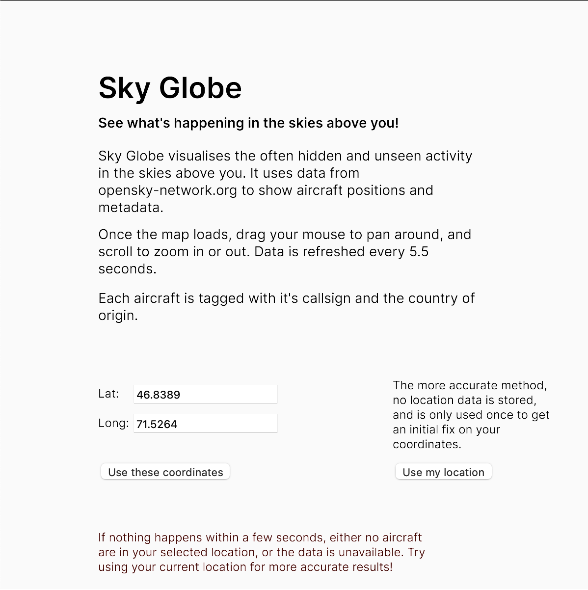

Visualisation of Air Traffic through Creative Coding
Overview
Using creative coding to create dynamic visualisations of air traffic in the skies to help with situational awareness
Abstract
The skies above us often seem empty, but they are often filled with aircraft, too far above to be seen by the naked eye. Open source APIs like the opensky-network allow us to paint a picture of what is flying above us at any given point of time. The ease of use of the opensky-network API makes it relatively simple to obtain various data-points of the aircraft flying in the skies at any location on the planet. The lowered barrier of entry to this dataset allows for people from different backgrounds and sectors to not only visualise the data but also draw meaningful insights from it. Websites like FlightRadar24.com use similar data-points and create 2D visual representations for anyone on the internet to freely access. The data obtained by opensky-network is community sourced, and as such isn’t restricted or censored by those looking to obfuscate the data. This data can be of great value for journalists, researchers, and activists looking to monitor air traffic. The emergence of easily accessible creative coding libraries such as p5JS and ThreeJS has enabled such people to quickly access the opensky-network API to visualise air traffic data at any location of their choosing.
Sky Globe is one such visualisation built with p5JS with the intent of identifying anomalous activity. It uses the opensky-network API to visualise air traffic using the users current location or a set of coordinates. The data is visualised using an interactive 3D interface which can be panned and zoomed into. Each aircraft is marked with its flight number, country of origin as well as a trail indicating its general direction of travel. This visualisation allows the viewer to see aircraft on a 3D canvas, which is useful as it shows the altitude of the aircraft. When a location with an airport in the vicinity is chosen, the departure and arrival patterns can clearly be seen. It shows all aircraft within an area of 295 km2 of the chosen location. The position of the aircraft is refreshed every 5.5 seconds. FlightAware and FlightRadar24 do not freely show a 3D visualisation of the skies, which makes it difficult to discern the relative position of the aircraft unless the viewer is well versed in reading the 2D maps. The visuals are simple and clean, with the intent of making it easy to see the traffic in the skies for those who might be unfamiliar or new to such visualisations.
By making the opensky-network API more accessible, the network will be of far more value to a larger audience and go a long way toward improving the efficacy of various kinds of research. The development of Sky Globe was inspired by the incident of an unidentified cargo plane which trespassed into Indian airspace and cleared to land at New Delhi under mysterious circumstances with little to no clarification by the Indian Government. Creative coding libraries offer a fairly low bar of entry into coding and manipulation of API sourced data.

Main Interface of Sky Globe

Sky Globe Interactive 3D View